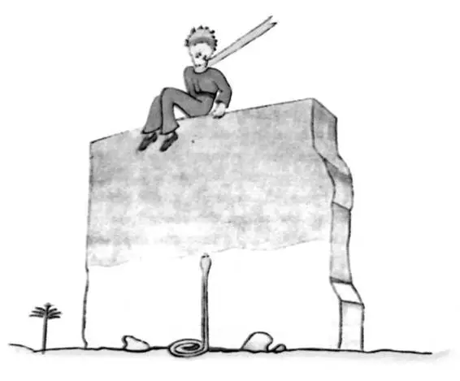
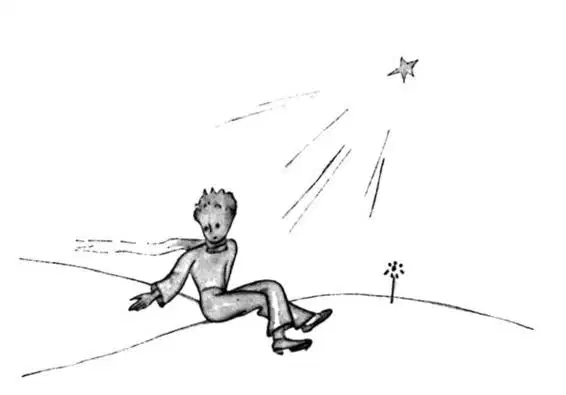
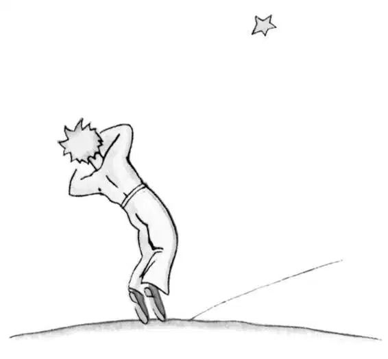

CHAPTER 26
第二十六章
—the little prince converses with the snake; the little prince consoles the narrator; the little prince returns to his planet
——小王子与蛇交谈；小王子安慰叙述者；小王子返回自己的星球
Beside the well there was the ruin of an old stone wall. When I came back from my work, the next evening, I saw from some distance away my little price sitting on top of a wall, with his feet dangling. And I heard him say:
井边是一堵残破的石墙。我第二天晚上修好机器回来时，远远地看到小王子坐在墙上，两脚悬在空中。我听到他说：
"Then you don't remember. This is not the exact spot."
“那么你是忘了啊。不是在这里呀。”
Another voice must have answered him, for he replied to it:
一定是另一个声音回答了他，因为他回答了那个声音。
"Yes, yes! It is the right day, but this is not the place."
“对啊，对！是今天没错，可地点不是这里。”
I continued my walk toward the wall. At no time did I see or hear anyone. The little prince, however, replied once again:
我向墙那边走去。可是我没有看到别的什么人，也没听到别人的声音。然而，小王子又回答说：
“—Exactly. You will see where my track begins, in the sand. You have nothing to do but wait for me there. I shall be there tonight.”
“——就是啊。你可以看我在沙子上留下的脚印，看看我是从哪里开始走的。你就在那里等着我就好了，什么都不用做。今晚我会来。”
I was only twenty metres from the wall, and I still saw nothing.
我离墙只有二十米，可我什么也没看见。
After a silence the little prince spoke again:
沉默了一会，小王子又说话了：
"You have good poison? You are sure that it will not make me suffer too long?"
“你有管用的毒药吗？你确定它不会让我痛苦很久吗？”
I stopped in my tracks, my heart torn asunder; but still I did not understand.
我停下了脚步，心如刀割，可我仍不明白他的意思。
"Now go away," said the little prince. "I want to get down from the wall."
“现在你让开。”小王子说，“我要从墙上下来了。”
I dropped my eyes, then, to the foot of the wall—and I leaped into the air. There before me, facing the little prince, was one of those yellow snakes that take just thirty seconds to bring your life to an end. Even as I was digging into my pocked to get out my revolver I made a running step back. But, at the noise I made, the snake let himself flow easily across the sand like the dying spray of a fountain, and, in no apparent hurry, disappeared, with a light metallic sound, among the stones.
于是我朝墙根看去——吓得我魂飞魄散。就在那里，我的前方，小王子面向我的地方，我看见一条黄蛇，那种只需三十秒钟就能结束你生命的黄蛇。我甚至是边从兜里摸手枪，边向墙边迅速退去。可听到我弄出的响声，蛇不慌不忙，像即将枯涸的喷泉喷出的水柱一样，慢慢地消失在沙子里，在石头边发出轻轻的、金属般的声音。
I reached the wall just in time to catch my little man in my arms; his face was white as snow.
我到了墙边，刚好用我的双臂接住我的小家伙，他面色苍白。
"What does this mean?" I demanded.
“这到底是怎么回事？”我赶忙问道。
"Why are you talking with snakes?"
“为什么你在和蛇说话呢？”
I had loosened the golden muffler that he always wore. I had moistened his temples, and had given him some water to drink. And now I did not dare ask him any more questions. He looked at me very gravely, and put his arms around my neck. I felt his heart beating like the heart of a dying bird, shot with someone's rifle...
我把他一直围着的金围巾解开。我沾了点水抹在他的太阳穴上，给他喝了些水。此刻，我不敢再问他问题了。他非常严肃地看着我，双手搂着我的脖子。我听到了他的心跳，就像一只被步枪射伤的小鸟一样，奄奄一息。
"I am glad that you have found what was the matter with your engine," he said. "Now you can go back home—”
“我很高兴你已经找到引擎的毛病所在了。”他说，“现在你可以回家了——”
"How do you know about that?"
“你怎么知道的？”
I was just coming to tell him that my work had been successful, beyond anything that I had dared to hope.
我正要来告诉他，我已经把引擎修好了，完全出乎我的想象。
He made no answer to my question, but he added:
他没有回答我的问题，接着说：
"I, too, am going back to home today..."
“我今天也要回家……”
Then, sadly—
然后，又很伤心地说：
"It is much farther... it is much more difficult..."
“可是我的家远得多……要回家难得多啊……”

I realised clearly that something extraordinary was happening. I was holding him close in my arms as if he were a little child; and yet it seemed to me that he was rushing headlong toward an abyss from which I could do nothing to restrain him...
我清楚地意识到，不寻常的事情正在发生。我把他紧紧搂在怀里，好像他就是一个小孩子似的；可是我却仿佛感到他正不断向一个深渊沉下去，而我却无法抓住他……
His look was very serious, like some one lost far away.
他神情肃穆，像是迷失在远方的人一样。
"I have your sheep. And I have the sheep's box. And I have the muzzle..."
“我有你画的羊。有羊睡的匣子。有嘴套子……”
And he gave me a sad smile.
然后，他忧伤地向我微笑了一下。
I waited a long time. I could see that he was reviving little by little.
我等了很久。我可以看到他慢慢地清醒过来。
"Dear little man," I said to him, "you are afraid..."
“亲爱的小家伙，”我对他说，“你怕……”
He was afraid, there was no doubt about that. But he laughed lightly.
他害怕呢，这一点毫无疑问。可他却淡然一笑。
"I shall be much more afraid this evening..."
“今晚我会更害怕……”
Once again I felt myself frozen by the sense of something irreparable. And I knew that I could not bear the thought of never hearing that laughter any more. For me, it was like a spring of fresh water in the desert.
这时，我又感到了什么不可弥补的事情在发生，一阵心寒。而且我知道，一想到我再也听不到他的笑声，我根本就受不了。对我而言，他的笑声就像沙漠中的一股清泉。
"Little man," I said, "I want to hear you laugh again."
“小家伙，”我说，“我想再听到你笑。”
But he said to me:
可是他对我说：
"Tonight, it will be a year... my star, then, can be found right above the place where I came to the Earth, a year ago..."
“今晚，就是一年了……我的星球一年前就在我降落到地球上那个地方的正上方啊……”
"Little man," I said, "tell me that it is only a bad dream—this affair of the snake, and the meeting-place, and the star...”
“小家伙，”我说，“告诉我这只不过是场噩梦——蛇的事，见面的地方，还有那个星球……”
But he did not answer my plea. He said to me, instead: "The thing that is important is the thing that is not seen..."
可是他没有答应我的请求。相反，他对我说：“重要的是我们看不到的东西……”
"Yes, I know..."
“是的，我知道……”
"It is just as it is with the flower. If you love a flower that lives on a star, it is sweet to look at the sky at night. All the stars are abloom with flowers..."
“就好比那朵花。如果你爱上一颗星星上的一朵花，那么，夜晚仰望星空就是一件开心的事。所有的星星都和花朵一起绽放……”
"Yes, I know..."
“是的，我明白……”
"It is just as it is with the water. Because of the pulley, and the rope, what you gave me to drink was like music. You remember—how good it was.”
“就好比这水。因为有了辘轳和绳子，你给我喝的水就像是音乐。你记得——它有多美妙。”
"Yes, I know..."
“是的，我记得……”
"And at night you will look up at the stars. Where I live everything is so small that I cannot show you where my star is to be found. It is better, like that. My star will just be one of the stars, for you. And so you will love to watch all the stars in the heavens... they will all be your friends. And, besides, I am going to make you a present..."
“夜晚的时候，你要仰望星空。我住的星球什么都小，我没法指给你看我星球所在的地方。那样会更好一些。对你来说，我的星球只不过是众星中的一颗。那么，你就会爱看天空里所有的星星……它们都会成为你的朋友。另外，我还要送你一件礼物……”
He laughed again.
他又笑了起来。
"Ah, little prince, dear little prince! I love to hear that laughter!"
“啊，小王子，亲爱的小王子！我爱听你那样的笑声！”
"That is my present. Just that. It will be as it was when we drank the water..."
“那就是我给你的礼物。只有笑声。就像我们一起喝水时那样……”
"What are you trying to say?"
“你到底想说什么啊？”
"All men have the stars," he answered, "but they are not the same things for different people. For some, who are travelers, the stars are guides. For others they are no more than little lights in the sky. For others, who are scholars, they are problems. For my businessman they were wealth. But all these stars are silent. You—you alone—will have the stars as no one else has them—”
他回答说：“星星属于我们所有人，可是在不同的人眼里，星星也有所不同。对那些旅行家来说，星星就是向导。而对另一些人而言，他们只不过是天空里微弱的亮光。学者们则认为它们是研究的对象。而商人则把他们看成是财富。然而，所有的星星都沉默不语。而你——唯有你——会拥有属于你自己的星星——”
"What are you trying to say?"
“你到底想要表达什么意思呢？”
"In one of the stars I shall be living. In one of them I shall be laughing. And so it will be as if all the stars were laughing, when you look at the sky at night... you—only you—will have stars that can laugh!”
“一颗星上，有我居住。一颗星上，有我在笑。因此，当你夜晚仰望星空之时，似乎所有的星星都在笑……所以你——唯有你——拥有会笑的星星啊！”
And he laughed again.
他又笑了起来。
"And when your sorrow is comforted (time soothes all sorrows) you will be content that you have known me. You will always be my friend. You will want to laugh with me. And you will sometimes open your window, so, for that pleasure... and your friends will be properly astonished to see you laughing as you look up at the sky! Then you will say to them, 'Yes, the stars always make me laugh!' And they will think you are crazy. It will be a very shabby trick that I shall have played on you..."
“当你悲伤的心得到了抚慰（时间会抚平所有的伤口），你会很高兴认识了我。你将会是我永远的朋友。你会想和我一起开怀大笑。有时，你会打开窗户和我一起开心，而你的朋友看到你仰望星空开怀大笑的样子，可能会很诧异吧！然后你就会对他们说：‘对啊，一看到星星我就想笑呢！’而他们会认为你疯了。我就是要和你玩玩这个把戏，好让你出丑呢……”
And he laughed again.
他再一次笑了起来。
"It will be as if, in place of the stars, I had given you a great number of little bells that knew how to laugh..."
“我给你的好像不是星星，而是一大堆会笑的小铃铛……”
And he laughed again. Then he quickly became serious:
说着他又大笑起来。然后他很快又神情严肃地说：
"Tonight—you know... do not come," said the little prince.
“今晚——告诉你……你还是别来了。”小王子说。
"I shall not leave you," I said.
我说：“我不会离开你的。”
"I shall look as if I were suffering. I shall look a little as if I were dying. It is like that. Do not come to see that. It is not worth the trouble..."
“我的样子会很痛苦。可能会有点像是要死去的样子。就像那样。不要来，不要看到我那个样子。用不着……”
"I shall not leave you."
“我不会离开你。”
But he was worried.
可他却担心起来。
"I tell you—it is also because of the snake. He must not bite you. Snakes—they are malicious creatures. This one might bite you just for fun...”
“我告诉你——这也是因为那条蛇的缘故。他绝不能咬你。可蛇——他们是邪恶的东西。这条蛇可能会觉得咬你一口好玩……”
"I shall not leave you."
“那我也不离开你。”
But a thought came to reassure him:
不过他突然想到什么，放心地说：
"It is true that they have no more poison for a second bite."
“对，他们没有足够的毒液来咬第二口。”
That night I did not see him set out on his way. He got away from me without making a sound. When I succeeded in catching up with him he was walking along with a quick and resolute step. He said to me merely:
那天晚上，我没有送他上路。他悄无声息地离开了我。当我极力赶上他的时候，他正以极快的速度坚定地迈着步伐。他只是对我说：
"Ah! You are there..."
“啊！你来了……”
And he took me by the hand. But he was still worrying.
他拉着我的手。可是他依然忧心忡忡的。
"It was wrong of you to come. You will suffer. I shall look as if I were dead; and that will not be true..."
“你不该来啊。你会难受的。我看上去会像死了一样，但那不是真的……”
I said nothing.
我什么也没说。

"You understand... it is too far. I cannot carry this body with me. It is too heavy."
“你知道……路途确实太遥远了。我不能拖着身体回去。太重了。”
I said nothing.
我什么也没说。
"But it will be like an old abandoned shell. There is nothing sad about old shells..."
“不过就像是蜕去的旧壳。旧壳没有什么好悲伤的……”
I said nothing.
我默不作声。
He was a little discouraged. But he made one more effort:
他有点沮丧。不过他又安慰我说：
"You know, it will be very nice. I, too, shall look at the stars. All the stars will be wells with a rusty pulley. All the stars will pour out fresh water for me to drink..."
“跟你说啊，那一定非常舒服。我还可以看星星啊。所有的星星都好比是一口口井，辘轳都生了锈。所有的星星都会冒出汩汩清泉，供我饮用呢……”
I said nothing.
我还是一言不发。
"That will be so amusing! You will have five hundred million little bells, and I shall have five hundred million springs of fresh water..."
“那一定会很有趣啊！你会有五亿个小铃铛，而我会有五亿口满是清泉的井啊……”
And he too said nothing more, becuase he was crying...
然后，他也什么都不说了，因为他哭了起来……
"Here it is. Let me go on by myself."
“到此为止吧。让我自己走吧。”
And he sat down, because he was afraid. Then he said, again:
可是他却坐了下来，因为他害怕。然后他又对我说：
"You know—my flower... I am responsible for her. And she is so weak! She is so naive! She has four thorns, of no use at all, to protect herself against all the world...”
“你知道——我的花儿……我要对她负责。她是那么纤弱！她又是那样天真！她用四根刺来保护自己，抵御外界的侵害，可实际上一点用也没有……”
I too sat down, because I was not able to stand up any longer.
我也坐下来，因为我再也站不住了。
"There now—that is all...”
“那么，就是这些，全告诉你了……”
He still hesitated a little; then he got up. He took one step. I could not move.
他还是犹豫了一小会，然后起身。他迈出了一步。可我却不能动弹。
There was nothing but a flash of yellow close to his ankle. He remained motionless for an instant. He did not cry out. He fell as gently as a tree falls. There was not even any sound, because of the sand.
只见一道黄光闪过他的脚踝。他立刻一动不动了。他没有叫出声来。轻轻地，他像一棵树一样倒在地上。因为是沙地，所以几乎听不到什么声音。
